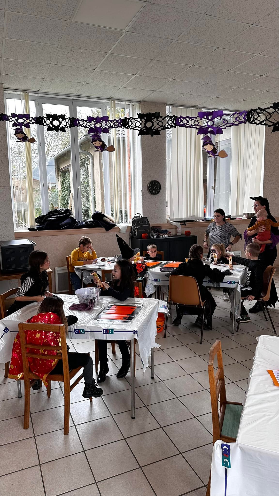
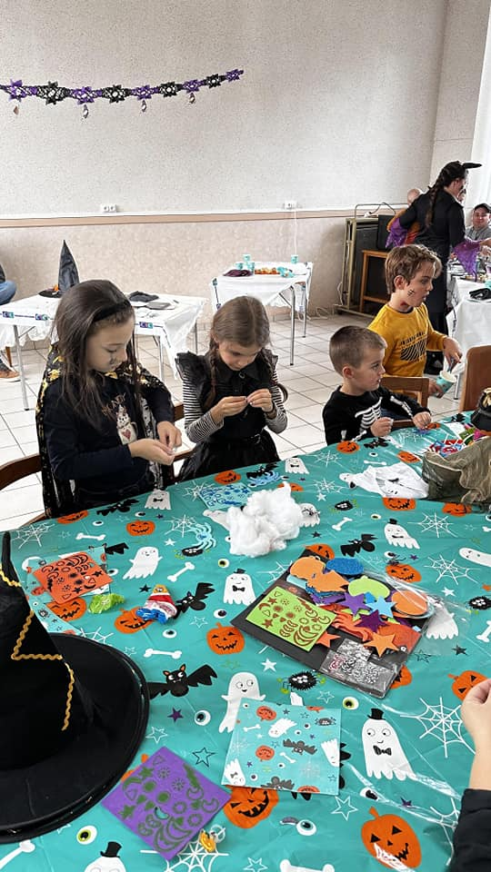
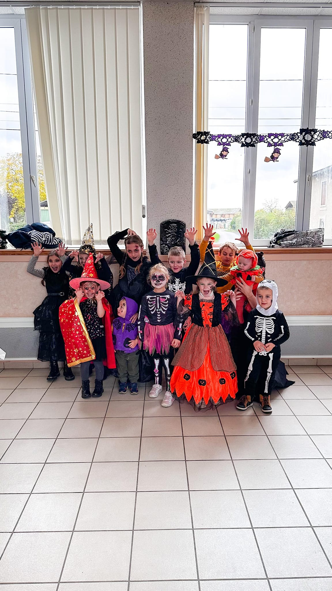
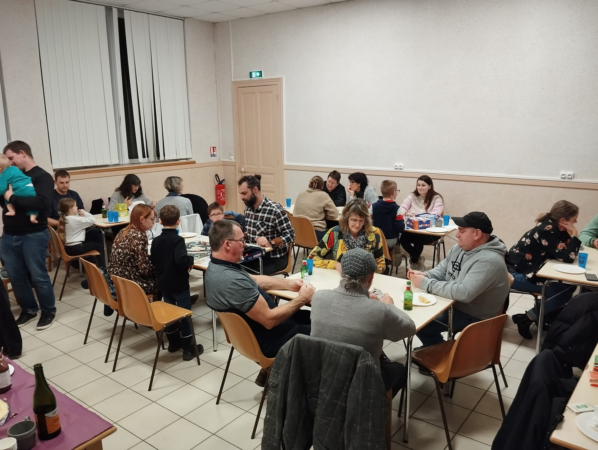
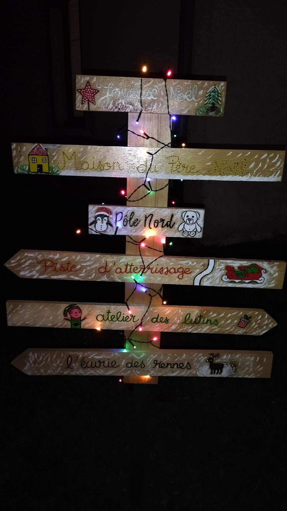
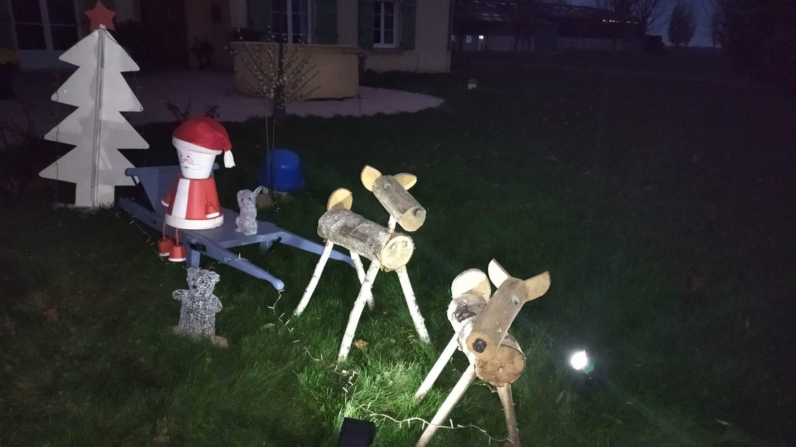
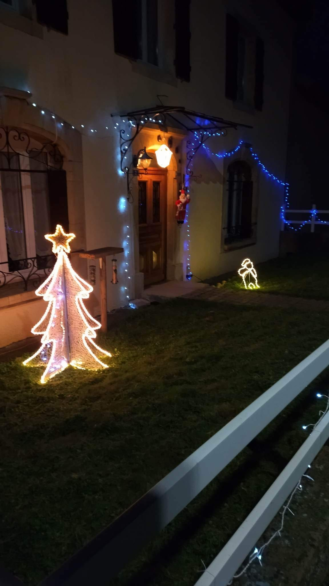

Projet humanitaire 2024-2025 – Aristide SARREY



Le Foyer Rural de Dampvitoux organise tout au long de l'année des événements solidaires et intergénérationnels. En 2024, nous avons notamment mis en place un atelier créatif pour les enfants à l'occasion d'Halloween, mêlant bricolages, déguisements et activités ludiques.

Une autre action majeure a été la soirée jeux intergénérationnelle, réunissant enfants, parents et grands-parents autour d'activités conviviales et de moments de partage.



Le Foyer Rural de Dampvitoux est une association à but non lucratif qui favorise la vie locale, la solidarité et le lien social. Par des initiatives citoyennes, festives et éducatives, elle mobilise les habitants du village autour de projets fédérateurs.